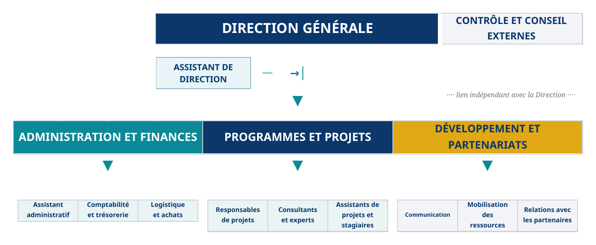

Gouvernance inclusiveInclusive governance
Renforcement institutionnel, participation citoyenne, redevabilité et gouvernance démocratique.Institutional strengthening, citizen participation, accountability and democratic governance.
Nous accompagnons les institutions publiques, organisations internationales, entreprises et acteurs de la société civile dans l’intégration du genre, des droits humains et de l’inclusion.We support public institutions, international organizations, businesses and civil society actors in integrating gender equality, human rights and inclusion.
« Gouverner avec équité,
transformer durablement »“Govern with equity,
transform sustainably”INCLUSIV’ Governance & Gender Consulting
INCLUSIV’ Governance & Gender Consulting est une entreprise de conseil dédiée à la gouvernance inclusive, aux droits humains, à l’égalité de genre ainsi qu’à l’autonomisation des femmes et des jeunes.INCLUSIV’ Governance & Gender Consulting is an advisory firm dedicated to inclusive governance, human rights, gender equality, and the empowerment of women and young people.
Notre approche conjugue analyse stratégique, connaissance des contextes, rigueur méthodologique et solutions adaptées aux besoins de chaque partenaire.Our approach combines strategic analysis, contextual knowledge, methodological rigor, and solutions tailored to each partner’s needs.
Renforcement institutionnel, participation citoyenne, redevabilité et gouvernance démocratique.Institutional strengthening, citizen participation, accountability and democratic governance.
Intégration du genre, leadership féminin, entrepreneuriat et budgétisation sensible au genre.Gender mainstreaming, women’s leadership, entrepreneurship and gender-responsive budgeting.
Accès à la justice, accompagnement juridique, justice transitionnelle et protection.Access to justice, legal support, transitional justice and protection.
Prévention des conflits, consolidation de la paix et mise en œuvre de l’agenda FPS.Conflict prevention, peacebuilding and implementation of the WPS agenda.
Participation des jeunes, employabilité, leadership et innovation sociale.Youth participation, employability, leadership and social innovation.
Résilience, transition juste et prise en compte du genre dans l’action climatique.Resilience, just transition and gender-responsive climate action.
Un accompagnement souple, rigoureux et orienté vers des résultats utiles.Flexible, rigorous support focused on practical results.
Présidente Directrice Générale — Spécialiste senior en gouvernance inclusive, programmes et égalité de genrePresident and Chief Executive Officer — Senior Specialist in Inclusive Governance, Programmes and Gender Equality
Juriste et spécialiste du développement, Christine Meta Mpinda possède plus de 15 ans d’expérience nationale et internationale en gouvernance, égalité de genre, autonomisation des femmes et des jeunes, prévention et réponse aux violences basées sur le genre, État de droit et accès à la justice. Elle a exercé en RDC, en République centrafricaine, en Guinée et au Tchad, notamment dans le cadre des programmes du PNUD et d’autres organisations.A lawyer and development specialist, Christine Meta Mpinda has more than 15 years of national and international experience in governance, gender equality, women’s and youth empowerment, prevention of and response to gender-based violence, rule of law and access to justice. She has worked in the DRC, Central African Republic, Guinea and Chad, including programmes implemented by UNDP and other organizations.
Son expertise couvre le conseil stratégique, l’élaboration de politiques, la conception et la gestion de programmes, la mobilisation de ressources, le renforcement institutionnel et la coordination de partenariats multipartites. Elle détient des masters en genre et développement, en coopération internationale et aide humanitaire, ainsi qu’en gestion de projet. Elle détient aussi un diplôme de Licence (Bac+5) en Droit Privé et Judiciaire. En 2022, African Shapers l’a classée parmi les 75 femmes juristes les plus influentes de la RDC.Her expertise includes strategic advisory, policy development, programme design and management, resource mobilization, institutional strengthening and multi-stakeholder coordination. She holds master’s degrees in gender and development, international cooperation and humanitarian aid, and project management. She also holds a five-year university degree in Private and Judicial Law. In 2022, African Shapers named her among the 75 most influential women lawyers in the DRC.

INCLUSIV’ constitue une base de consultants qualifiés mobilisables selon les besoins de ses missions. Il ne s’agit pas d’un recrutement : seuls les profils correspondant aux critères d’une opportunité pourront être contactés.INCLUSIV’ maintains a pool of qualified consultants who may be engaged according to assignment needs. This is not a recruitment process: only profiles matching the criteria of a specific opportunity may be contacted.
Soumettre un profilSubmit a profileLe formulaire accepte toutes les messageries et permet de sélectionner plusieurs documents, notamment un CV et une pièce complémentaire.The form works with any email service and lets you select multiple documents, including a CV and a supporting document.
L’inclusion dans le roster ne garantit aucune mission.Inclusion in the roster does not guarantee an assignment.
Retrouvez ici nos appels, publications et nouvelles ressources.Find our calls, publications and new resources here.
Le document final sera publié dans cet espace dès sa validation.The final document will be published here once it has been approved.
Document bientôt disponibleDocument available soonNos prochains articles, notes d’analyse, études et ressources institutionnelles seront publiés dans cet espace.Our upcoming articles, policy briefs, studies and institutional resources will be published in this space.
Documents bientôt disponiblesDocuments available soonLes offres d’emploi, de stage et les opportunités de consultance ouvertes par INCLUSIV’ seront publiées dans cet espace.Job vacancies, internships and consulting opportunities opened by INCLUSIV’ will be published in this space.
Documents bientôt disponiblesDocuments available soonConseil et interventions en République démocratique du Congo et à l’international.Advisory services and assignments in the Democratic Republic of the Congo and internationally.